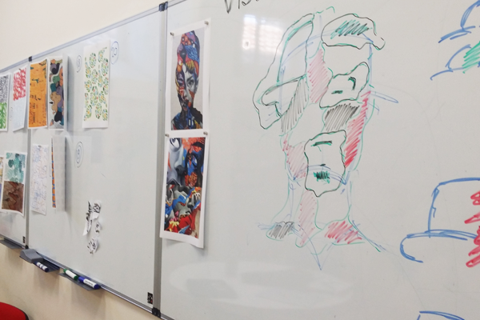
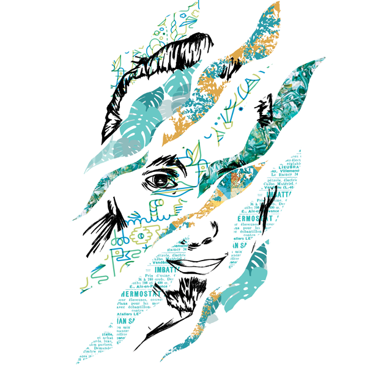
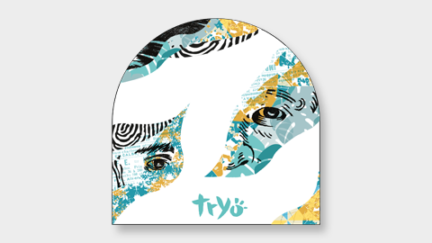
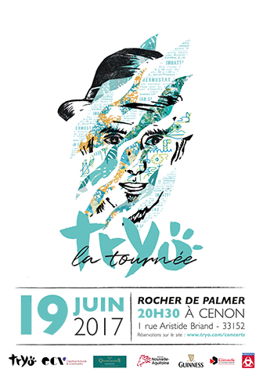
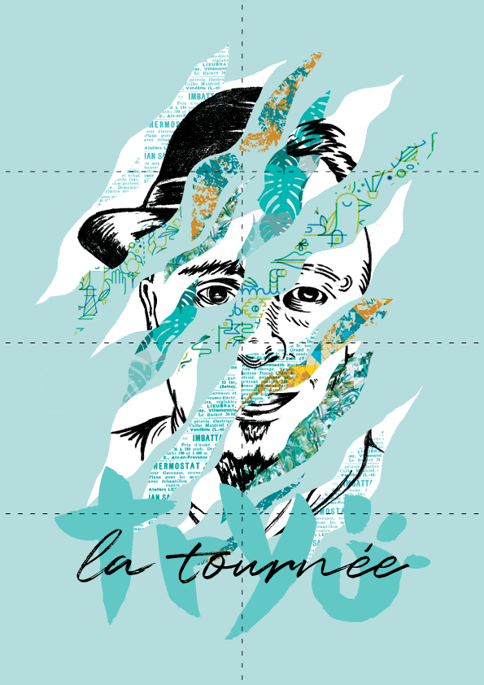

Tryo
(Student Project)
*Winning Project*
Tryo est un groupe de chanson française composé de quatre membres : Guizmo, Christophe Mali, Manu Eveno et Daniel Bravo. Le but de cette campagne globale était de créer toute l'identité et la communication du prochain album de Tryo. Nous avions 4 jours pour tout réaliser avant de présenter notre travail au jury composé des membres du groupe ainsi que de leur équipe de communication.
-
Tryo is a French song group made up of four members: Guizmo, Christophe Mali, Manu Eveno and Daniel Bravo.
The goal of this global campaign was to create all the identity and communication for Tryo's next album. We had 4 days to do everything before presenting our work to the jury made up of the members of the group as well as their communication team.
Projet en collaboration avec Antoine Mercier, Mathilde Poncet, Nakiya Karimjee, Emmanuelle Ferrié et Charline Facco
Tryo ECV 2017
Présentation
- Presentation
Nous avons décidé de ne pas toucher au logotype du groupe car celui-ci traverse les époques et est connu de tous. Tryo étant très engagé pour la préservation de l'environnement, nous avons voulu donner une image mêlant nature et poésie, tout en gardant un côté sauvage pour mettre en avant la dynamique du groupe. Pour arriver à ceci, nous avons joué sur les formes, les motifs et les couleurs. Les formes rappellent celles de feuilles ou de coups de griffes tandis que les couleurs sont majoritairement douces mais toujours avec une couleur chaude qui vient apporter ce côté sauvage et dynamique. Les maîtres mots de cette identité sont donc : Nature / Poésie / Sauvage / Douceur / Dynamisme / Unité.
-
We decided not to touch the logo of the group because it goes through the ages and is known to all. Tryo being very committed to the preservation of the environment, we wanted to give an image mixing nature and poetry, while keeping a wild side to highlight the dynamics of the group. To achieve this, we played with shapes, patterns and colors. The shapes are reminiscent of leaves or scratching while the colors are mostly soft but always with a warm color that brings this wild and dynamic side. The key words of this identity are therefore: Nature / Poetry / Wilderness / Sweetness / Dynamism / Unity.
Recherches
- Research
- 


Variations
- Variations
Zone de protection
- Protection Zone
Couleurs principales
- Main Colors
vert
opalineRVB 180 / 221 / 220
CMJN 34 / 0 / 17 / 0
Hexa #B4DDDC
Pantone 317 C
bleu
tiffanyRVB 102 / 193 / 193
CMJN 60 / 0 / 30 / 0
Hexa #66C1C1
Pantone 3262 C
bleu
sarcelleRVB 36 / 147 / 148
CMJN 78 / 21 / 43 / 4
Hexa #249394
Pantone 322 C
Couleurs secondaires
- Secondary Colors
Vénitien
RVB 224 / 167 / 90
CMJN 12 / 37 / 71 / 2
Hexa #E0A75A
Pantone 157 C
Typographies
- Typographies
Motifs
- Patterns

Portraits
- Portraits
Assemblage
- Assembly

- 
Nous avons voulu mettre l'accent sur le fait que le groupe a toujours été perçu comme une unité, et nous avons pour cela créé un visuel mêlant les 4 membres du groupe dans leur univers.
-
We wanted to emphasize the fact that the group has always been perceived as a unit,
and for that we created a visual mixing the 4 members of the group in their universe.
Pochette CD
- CD cover
Disque
- Disk
- 
Livret
- Booklet

Vinyle
- Vinyl
Ticket
- Concert Ticket
Goodies
- Goodies
Papertoy
- Papertoy
Pour la campagne de communication, nous avons imaginé un papertoy à l'image de l'album et à monter soi-même. Le papier est "ensemencé", c'est-à-dire qu'il contient des graines et que le papertoy peut être laissé dans la terre pour faire pousser des fleurs. Un concours photo serait organisé sur instagram afin de mettre en scène son papertoy dans la nature.
-
For the communication campaign, we imagined a papertoy in the image of the album and to assemble oneself.
The paper is "seeded", that is, it contains seeds and the papertoy can be left in the ground to grow flowers.
A photo competition would be organized on Instagram in order to stage his papertoy in nature.

Affiches
- Advertising Poster

- 
Flyer
- Flyer
Toujours dans une optique de préserver la nature, nous avons remarqué que la plupart des flyers étaient jetés suite à leur distribution. Pour palier à ceci, nous avons imaginé un pliage spécial qui permettrait, lorsque l'on déplie le flyer, d'obtenir un poster à garder chez soi.
-
Always with a view to preserving nature, we noticed that most of the flyers were discarded after their distribution.
To overcome this, we imagined a special folding that would allow, when we unfold the flyer, to obtain a poster to keep at home.
- 
Newsletter
- Newsletter
Site internet
- Website

 Back to Top
Back to Top